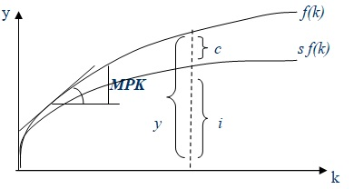

Неоклассические модели роста преодолевали ряд ограничений кейнсианских моделей и позволяли более точно описать особенности макроэкономических процессов. Р.Солоу показал, что нестабильность динамического равновесия в кейнсианских моделях была следствием невзаимозаменяемости факторов производства. Вместо функции Леонтьева он использовал в своей модели производственную функцию Кобба-Дугласа, в которой труд и капитал являются субститутами. Другими предпосылками анализа в модели Солоу являются: убывающая предельная производительность капитала, постоянная отдача от масштаба, постоянная норма выбытия, отсутствие инвестиционных лагов.
Взаимозаменяемость факторов (изменение капиталовооруженности) объясняется не только технологическими условиями, но и неоклассической предпосылкой о совершенной конкуренции на рынках факторов. Необходимым условием равновесия экономической системы является равенство совокупного спроса и предложения. Предложение описывается производственной функцией с постоянной отдачей от масштаба: Y =F(K,L) и для любого положительного z верно: zF(K,L) = F (zK, zL). Тогда, если z=1/L, то, Y/L = F(K/L,1).

Совокупный спрос в модели Солоу определяется инвестициями и потреблением ( государственные закупки для простоты не учитываются): y=i+c, где i и с - инвестиции и потребление в расчете на одного занятого. Доход делится между потреблением и сбережениями в соответствии с нормой сбережения, так что потребление можно представить как c=(1-s)y, где s - норма сбережения (накопления), тогда y=c+i=(l-s)y+i, откуда i = sy. В условиях равновесия инвестиции равны сбережениям и пропорциональны доходу. Условия равенства спроса и предложения могут быть представлены как f(k)=c+i или f(k)=i/s. Производственная функция определяет предложение на рынке товаров, а накопление капитала - спрос на произведенный продукт.
В модели Солоу найдено объяснение механизма непрерывного экономического роста в режиме равновесия при полной занятости ресурсов. Как известно, в кейнсианских моделях норма сбережения задавалось экзогенно и определяла величину равновесного темпа роста дохода. В неоклассической модели Солоу при любой норме сбережения рыночная экономика стремится к соответствующему устойчивому уровню фондовооруженности (k*) и сбалансированному росту, когда доход и капитал растут с темпом (n+g). Beличина нормы сбережения (накопления) является объектом экономической политики и важна при оценке различных программ экономического роста.
Поскольку равновесный экономический рост совместим с различнымими нормами сбережения (как мы видели, увеличение s лишь на короткое время ускоряло рост экономики, в длительном периоде экономика возвращалась к устойчивому равновесию и постоянному темпу роста в зависимости от значения n и g), возникает проблема выбора оптимальной нормы сбережения.
Равенство представляет «золотое правило» накопления: если норма сбережений равна эластичности выпуска по капиталу, то в растущей с постоянным темпом экономике средняя норма потребления достигает максимума при полном использовании труда и капитала.
Модель Солоу показывает, что норма сбережения является важнейшим фактором, определяющим устойчивый уровень капиталовооруженности и, соответственно, уровень выпуска. Страны с более высокой нормой сбережения больше инвестируют и имеют более высокий уровень капиталовооруженности, что обеспечивает более высокий темп роста.
Таким образом, чем выше норма сбережения (накопления), тем более высокий уровень выпуска и запаса капитала может быть достигнут в состоянии устойчивого равновесия. Однако повышение нормы накопления ведет к ускорению экономического роста в краткосрочном периоде, до тех пор пока экономика не достигнет точки нового устойчивого равновесия.
Очевидно, что ни сам процесс накопления, ни увеличение нормы сбережения не могут объяснить механизм непрерывного роста выпуска в расчете на душу населения в устойчивом состоянии. Они показывают лишь переход от одного состояния равновесия к другому. Для дальнейшего развития модели Солоу поочередно снимаются две предпосылки: неизменность численности населения и его занятой части (их динамика предполагается одинаковой) и отсутствие технического прогресса. Рассмотренная модель Солоу позволяет описать механизм долгосрочного экономического роста, сохраняющий равновесие в экономике и полную занятость факторов. Она выделяет технический прогресс как единственную основу устойчивого роста благосостояния и позволяет найти оптимальный вариант роста, обеспечивающий максимум потребления. Представленная модель не свободна и от недостатков. Модель анализирует состояния устойчивого равновесия, достигаемые в длительной перспективе, тогда как для экономической политики важна и краткосрочная динамика производства и уровня жизни. Многие экзогенные переменные модели Солоу – s, d, п, g – предпочтительнее было бы определять внутри модели, поскольку они тесно связаны с другими ее параметрами и могут видоизменять конечный результат.
Модель не включает также целый ряд ограничителей роста, существенных в современных условиях ресурсных, экологических, социальных. Используемая в модели функция Кобба-Дугласа, описывая лишь определенный тип взаимодействия факторов производства, не всегда отражает реальную ситуацию в экономике. Эти и другие недостатки пытаются преодолеть современные теории экономического роста.
В неоклассической модели роста объем выпуска в устойчивом состоянии растет с темпом (n + g), а выпуск на душу населения - с темпом g, т.е. устойчивый темп роста определяется экзогенно. Современные теории эндогенного роста пытаются определить устойчивый темп роста в рамках модели, эндогенно, связывая его со всеми возможными количественными и качественными факторами: ресурсными, институциональными и др.
Сторонники концепции «экономики предложения» полагают, что увеличение темпов роста при полной занятости возможно прежде всего путем сокращения регулирующего вмешательства извне в рыночную систему.